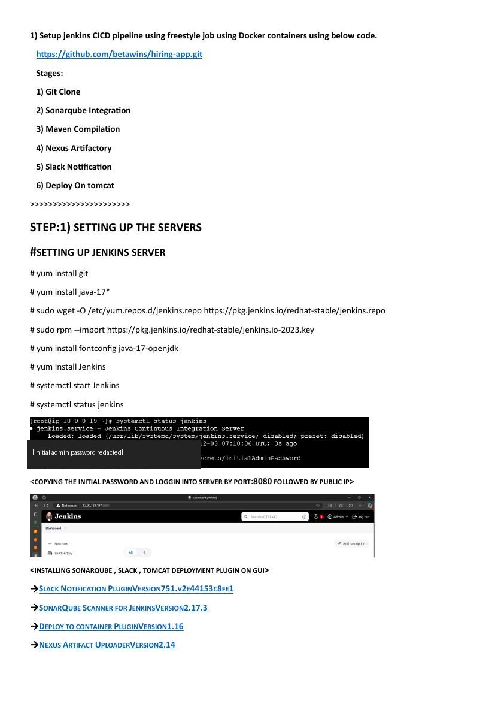
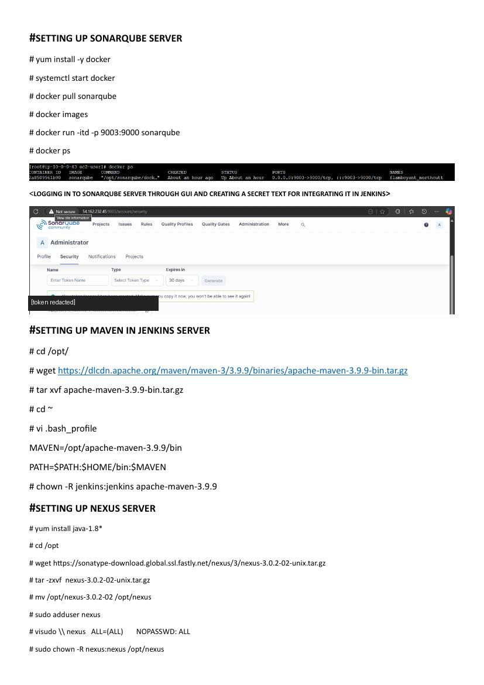
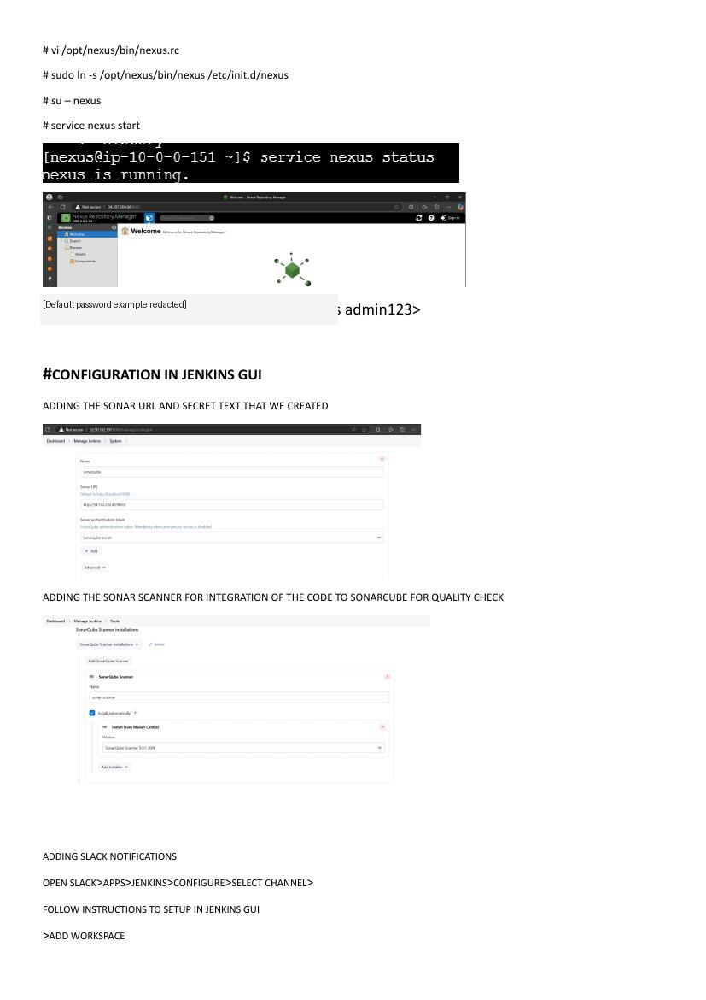
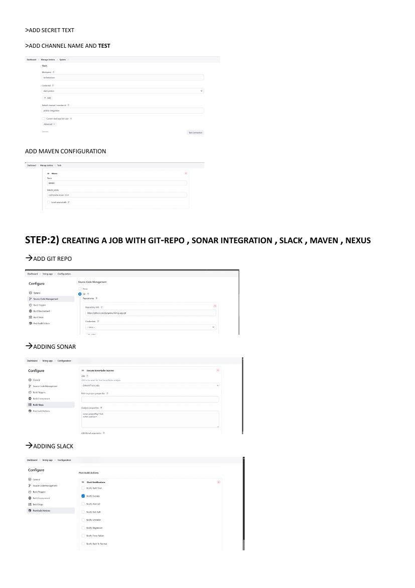
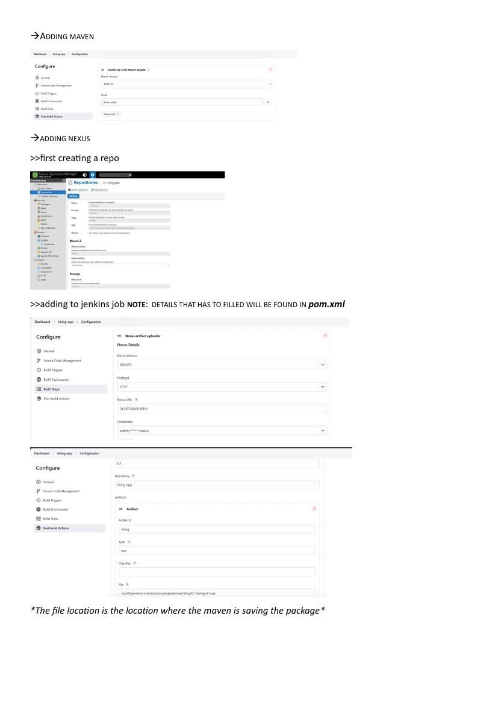
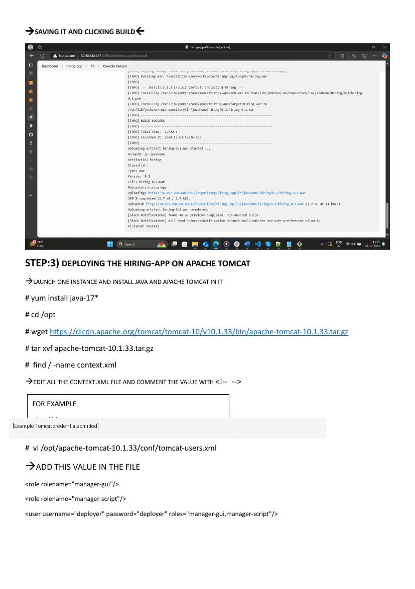
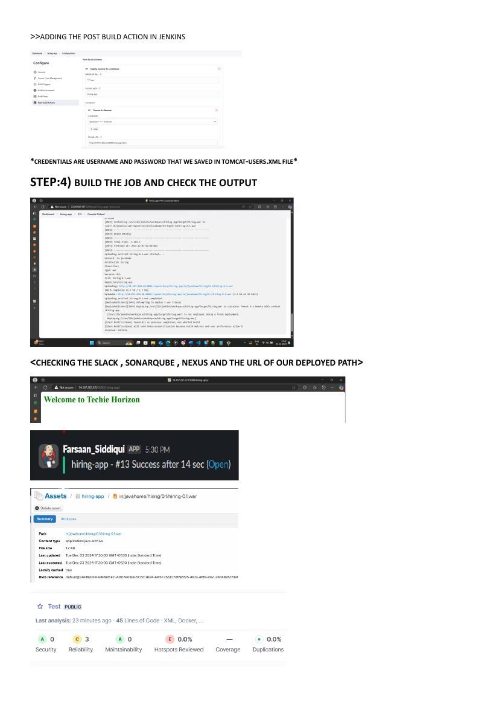
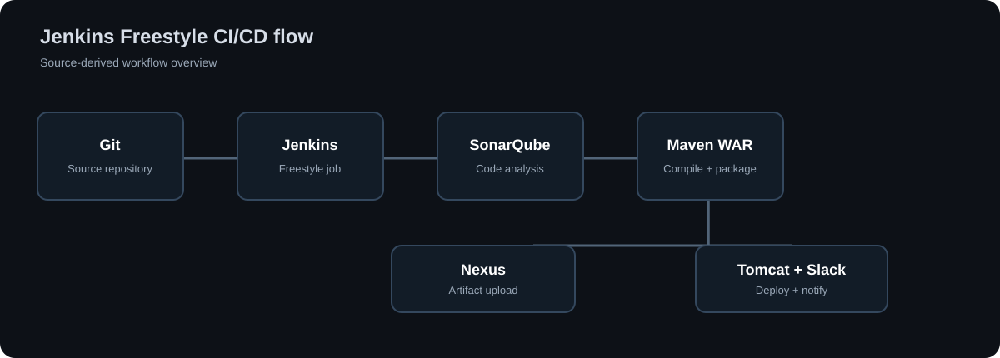

Jenkins Freestyle CI/CD Pipeline
A deployed Java application delivery workflow using Jenkins Freestyle jobs, Maven builds, SonarQube code analysis, Nexus artifact publishing, Slack notifications and Apache Tomcat deployment.
1. Project Overview
This project implements a Jenkins Freestyle CI/CD workflow for a Java-based Maven application. Jenkins coordinates source-code checkout, code analysis, application packaging, artifact publishing, build notifications and deployment to Apache Tomcat.
The configured services have been deployed and checked in the project environment. The sections below describe the architecture, implementation, operational checks and repository layout.
2. Repository Structure
- terraform/ — AWS infrastructure configuration.
- ansible/ — inventory, playbooks and configuration checks.
jenkins/freestyle-job/— configuration checklist.- docs/screenshots/ — project setup, configuration and deployment screenshots.
- docs/ — architecture, runbook, security and project documentation.
.github/workflows/— Terraform and Ansible validation workflow.
To publish this documentation site, open GitHub repository Settings → Pages and select Deploy from a branch, branch main, folder / (root).
3. Project Screenshots
Screenshots of the project environment, service configuration, build process and application deployment.
01. Jenkins Installation and Plugin Configuration
Jenkins installation, initial setup and plugin configuration.

02. SonarQube, Maven and Nexus Setup
SonarQube service, Maven installation and Nexus configuration.

03. Nexus Service and Jenkins Global Configuration
Nexus service status and Jenkins tool integrations.

04. Slack, Maven and Freestyle Job Configuration
Slack settings, Maven configuration, Git source control and job build steps.

05. Maven Build and Nexus Artifact Publishing
Maven build configuration and Nexus artifact publishing settings.

06. Build Output and Tomcat Configuration
Build output followed by Apache Tomcat installation and configuration.

07. Application Deployment and Integration Results
Tomcat deployment and the application, Slack, Nexus and SonarQube result views.

4. Project Architecture

Jenkins orchestrates the build and post-build actions. SonarQube handles code analysis, Maven produces the WAR, Nexus stores the artifact, Slack reports the result, and Tomcat runs the deployed application.
Terraform and Ansible are used for the infrastructure and configuration tasks included in the repository.
5. CI/CD Pipeline Workflow
- Jenkins checks out the intended branch from Git.
- SonarQube Scanner analyzes the source code using the project configuration.
- Maven builds and packages the application.
- The resulting WAR is uploaded to a Nexus repository using its artifact coordinates.
- Post-build actions send Slack status and deploy the artifact to Tomcat.
- The operator checks the Jenkins console, SonarQube analysis, Nexus artifact, Slack notification, and deployed application.
# Maven build command
mvn clean verify
# Check tools on the Jenkins host
java -version
mvn -version6. Technology Stack
| Component | Configuration | Role in the project |
|---|---|---|
| Jenkins | Jenkins Freestyle job | CI/CD orchestration |
| SonarQube | Configured analysis service | Static code analysis |
| Maven | 3.9.9 | Application build and packaging |
| Nexus Repository | Configured repository | WAR artifact storage |
| Tomcat | 10.1.33 | Java web application deployment |
| Slack | Jenkins notification integration | Build-status notifications |
7. Jenkins Freestyle Job Configuration
Global configuration
- Configure Git, JDK, Maven, SonarQube Scanner, Slack, Nexus uploader, and deployment integrations as required.
- Set the SonarQube server URL and credential in Jenkins system configuration.
- Configure the Slack workspace, secret, and destination channel.
- Set the Nexus endpoint, credentials, repository, and artifact details.
Job configuration
- Configure the Git repository and select the branch to build.
- Configure SonarQube analysis using the project files and quality-gate policy.
- Configure the Maven build goals required by the application.
- Upload the WAR generated by the build. Use the actual group ID, artifact ID, version, and file path.
- Configure Slack notifications and the Tomcat deployment post-build action.
8. Apache Tomcat Deployment
Apache Tomcat hosts the Java web application. Jenkins publishes the generated WAR through the configured deployment action.
- Install a supported Java runtime and Tomcat version compatible with the application.
- Configure a dedicated deployment account with only the required Tomcat Manager role.
- Restrict the manager endpoint to the Jenkins host or a trusted private network.
- Store the deployment credentials in Jenkins Credentials; do not place them in job text or source control.
- Deploy the expected WAR and run a simple HTTP smoke test against the application context.
9. Deployment Verification
- Jenkins console output confirms the expected commit and successful build.
- SonarQube displays a fresh analysis and the expected quality-gate status.
- Nexus contains the correct WAR and version.
- Slack receives the correct build result.
- Tomcat deploys the intended artifact and the application responds to a smoke test.
terraform -chdir=terraform fmt -check -recursive
terraform -chdir=terraform init -backend=false
terraform -chdir=terraform validate
ansible-playbook -i ansible/inventory.example.ini ansible/preflight.yml --syntax-checkThe infrastructure checks and application delivery components have been checked in the project environment.
10. Security Practices
- Use unique credentials and rotate them according to the environment security policy.
- Grant service accounts only the permissions required for their specific tasks.
- Keep secrets in Jenkins Credentials, not in pipeline configuration, source files, screenshots, or logs.
- Keep Jenkins, SonarQube, Nexus, and Tomcat Manager on private networking or restrict access to trusted addresses.
- Keep Jenkins, SonarQube, Nexus and Tomcat updated, and maintain backups and a rollback plan.
11. Troubleshooting
Git checkout fails
Check the repository URL, branch, credentials, DNS, and outbound access.
Maven build fails
Inspect compile/test output and Java/Maven compatibility. Avoid skipping tests merely to get a green build.
SonarQube analysis fails
Check server availability, token scope, scanner configuration, and quality-gate output.
Nexus upload fails
Verify repository type, artifact coordinates, permissions, and TLS connectivity.
Tomcat deployment fails
Check manager endpoint access, account roles, Tomcat logs, and application compatibility. Keep the last known-good artifact available for rollback.